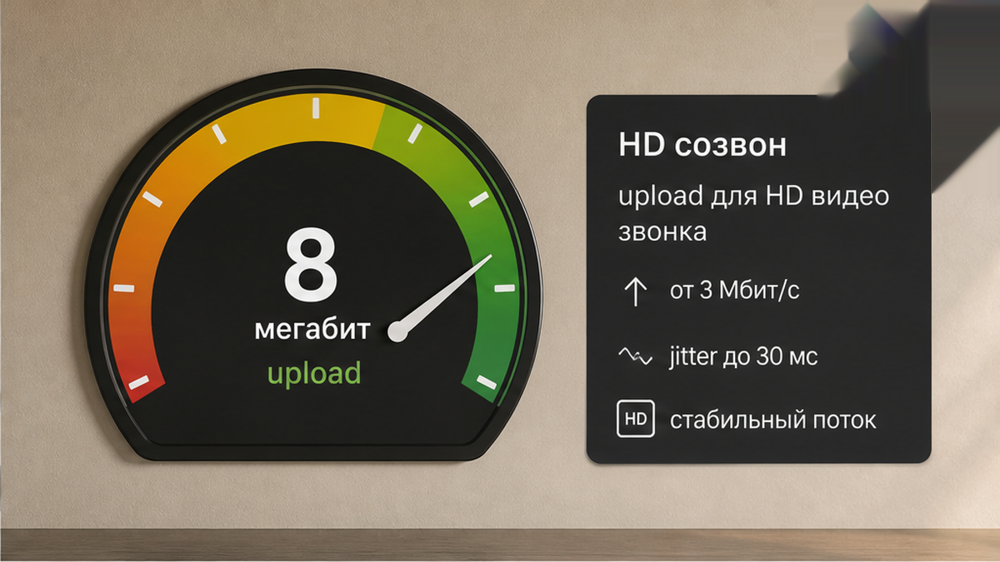
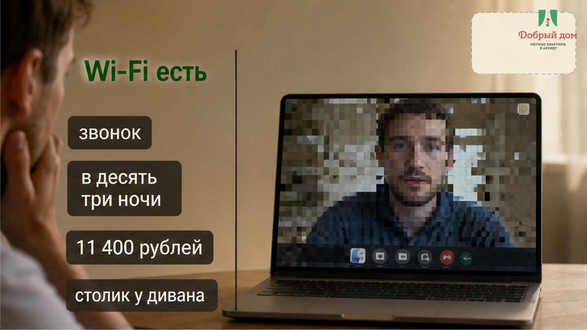
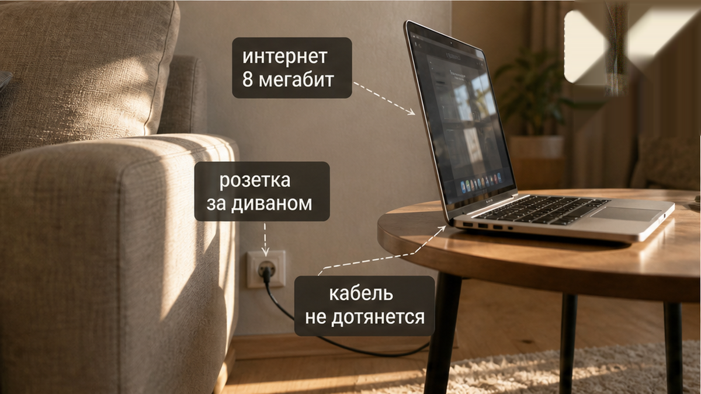
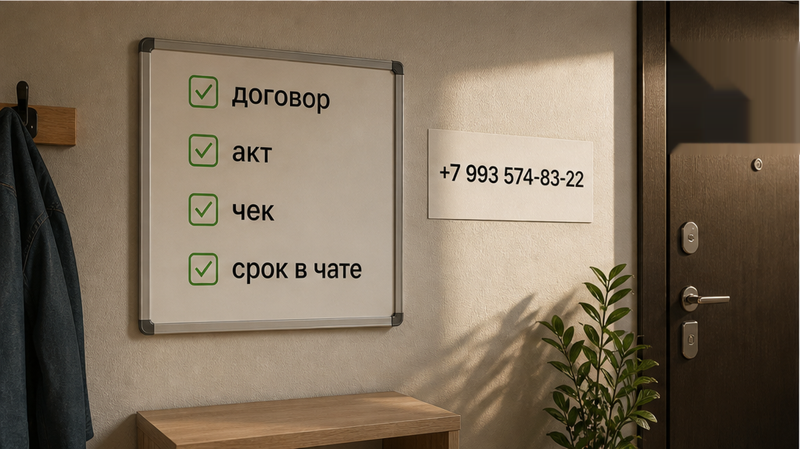
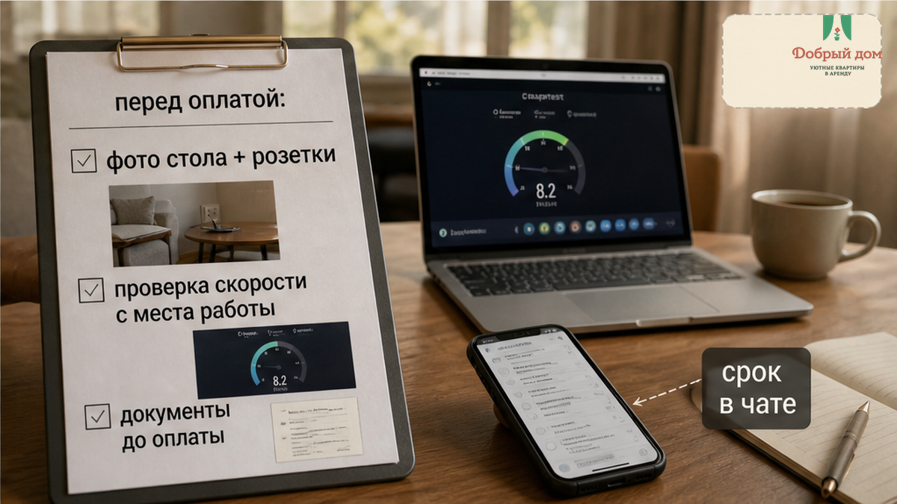
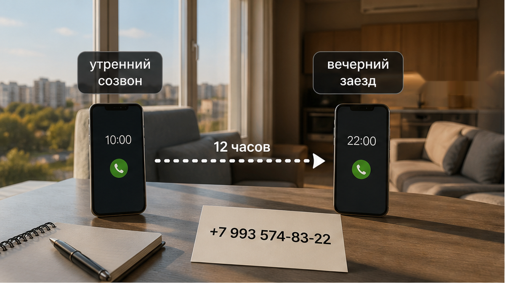
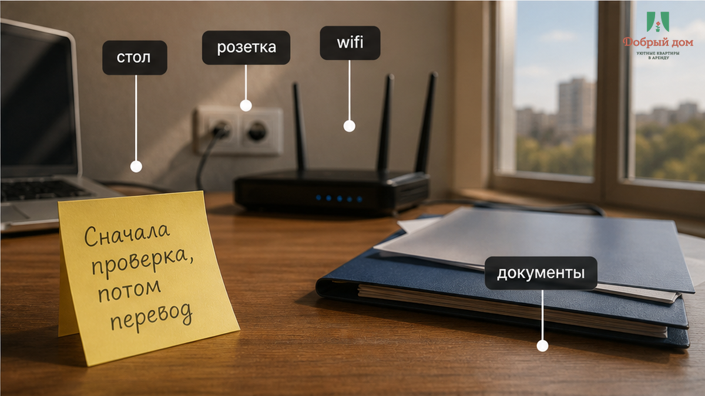

«Всё есть, быстрый интернет, справку пришлём» — три спокойные фразы в чате, после которых человек перевёл 11 400 ₽ за три ночи. А утром оказалось: вместо рабочего стола — журнальный столик у дивана, розетка спрятана за этим диваном, кабель до неё не дотягивается, а Wi‑Fi в комнате даёт около 8 Мбит/с. Письма уходят. Мессенджер живёт. Но на видеосозвоне картинка рассыпается, коллеги слышат «вы пропадаете», а у вас через несколько минут доклад.
И самое неприятное здесь не в журнальном столике. Хозяин на вопрос ответил без злости: «ну вы же не просили отдельно рабочее место». Формально — верно. Вы спросили, нормальный ли интернет, вам ответили: быстрый. Вы спросили про документы, вам сказали: пришлём. Только между «всё есть» и реальной квартирой лежит ваша командировка, созвон с камерой и бухгалтерия, которой потом нужны закрывающие.
Я хост посуточной в Тюмени. Это «Добрый дом». В Telegram и MAX нам регулярно пишут гости, которым квартира нужна не просто переночевать. Приехали на объект, аудит, монтаж, защиту проекта — и утром надо открыть ноутбук, включить камеру, не искать удлинитель и не объяснять коллегам, почему связь снова упала.


Роутер есть почти в любой квартире. Но вы не будете сидеть внутри роутера. Вы сядете там, где стоит стол — или то, что в объявлении назвали столом. За стенами, в дальнем углу комнаты, вечером, когда подключены телевизор и другие устройства, слово «быстрый» быстро превращается в квадратики на экране.
В этом кейсе интернет не пропал совсем. Он просто не выдержал ту задачу, ради которой гость приехал. И это важная разница. Можно честно сказать, что Wi‑Fi в квартире есть. Можно даже не соврать про скорость возле роутера. Но если с рабочего места нельзя спокойно провести видеосозвон, для командировочного гостя эта услуга не работает.
До оплаты просите не обещание, а проверку: скриншот замера именно из точки, где будет ноутбук, или короткий тестовый видеозвонок. Не «интернет по квартире хороший?» Не «гости жаловались?» А конкретно: где стоит стол, какая там связь, можно ли говорить с камерой. Две минуты такого звонка дают больше, чем десять сообщений про «всё летает».
Устное «всё включено» часто устроено так же. Вроде ничего не скрыли, но нужное вам оказывается за скобками. Посмотрите кейс про «всё включено», за которое доплатили в такси 2 400 ₽: пока не назвали услугу вслух, каждый услышал своё.

В объявлении столом может быть барная стойка, подоконник, складная панель или столик у дивана. Для кофе и завтрака этого достаточно. Для ноутбука, документов, зарядки и полутора часов перед камерой — уже нет.
Рабочее место проверяется не красивой фотографией комнаты. Нужен стол, куда помещаются ноутбук и бумаги; стул, на котором вы не сидите боком; свет, который не бьёт в камеру; и розетка в пределах кабеля. Розетка особенно коварна: она может быть в квартире, но за шкафом, холодильником или диваном. В момент заселения вам от этого не легче.
Попросите фото стола и розетки в одном кадре — с той стороны, где будете сидеть вы. Не общий снимок интерьера. Не «вот здесь есть столик». Один кадр, на котором видно поверхность, стул и питание. У нормального хоста это не вызывает обиды: задача понятна, вопрос обычный.
И не перекладывайте эту проверку на отзывы. Люди чаще пишут про чистоту, район и приветливость хозяина. Работать в квартире нужно не каждому, поэтому про качество связи и розетку у стола обычно никто не рассказывает. Почему высокая оценка не отвечает на ваш конкретный вопрос, разбирал в тексте про рейтинг 4,8 из двух отзывов «всё супер».


«Справку пришлём после выезда» звучит успокаивающе ровно до того момента, когда бухгалтерия спрашивает договор, акт и документ об оплате. Для кого-то нужна квитанция самозанятого, для кого-то — чек. Отдельную справку о проживании тоже могут запросить. И заранее важно не надеяться, что хост потом всё вспомнит, а понять: какие документы будут и в какой срок.
Слово «потом» в брони — плохое слово. После выезда вы уже в другом городе, у хоста следующие гости, переписка уехала вверх, а отчётность осталась у вас. Поэтому список документов и срок отправки фиксируйте в том же чате, где обсуждаете цену. Письменное «да, пришлём» полезнее уверенного голоса в телефоне.
Где розетка у стола и какой реальный Wi‑Fi на видеосозвон? Закрывающие пришлёте до оплаты? Это не придирка и не допрос. Это вопрос человека, которому утром надо работать, а после поездки — отчитаться. Если у вас был спор из-за таких «мелочей», расскажите нам в Telegram или MAX.

Перед поездом хочется закрыть вопрос быстро. Хост может сказать, что квартирой интересуются другие. Вы смотрите несколько фото, видите слово «Wi‑Fi», слышите «документы будут» — и переводите, чтобы не остаться без жилья. А проверить предлагается потом, когда деньги уже ушли и вечер уже начался.
Такой сценарий не всегда заканчивается плохой квартирой. Иногда он заканчивается просто тем, что обещание оказалось слишком общим для вашей задачи. А иногда — тишиной после предоплаты, как в истории про 3 000 ₽ предоплаты и тишину в чате. Позднее заселение вообще не оставляет запаса на ошибку: поезд задержался, вы приехали уставшим, искать другой вариант уже тяжело. Отдельно об этом — в тексте про выезд в 12:00 и поезд в 16:30.
Когда гость пишет, что едет в командировку и будет созвон, для хоста это не фон переписки. Это условие брони. Показать стол, розетку, скорость и порядок с документами надо до перевода. Нет. Так не заселяем.

В этой истории человек не купил роскошь и не попросил невозможного. Он заплатил за три ночи и рассчитывал на место, где можно выполнить рабочую задачу. Квартира формально дала ему стол, интернет и обещание справки. Но между формальностью и работой оказалась пропасть: журнальный столик, розетка за диваном и связь, на которой нельзя держать видеосозвон.
Сначала проверка. Потом перевод.
Нужна квартира под созвоны и отчётность — пишите в Telegram или MAX, менеджер — @Dobriy_dom_Tyumen, телефон — +7 (993) 574‑83‑22. Забронировать можно на странице бронирования, подробнее о нас — на сайте «Добрый дом». До оплаты покажем рабочее место, розетку и замер скорости.